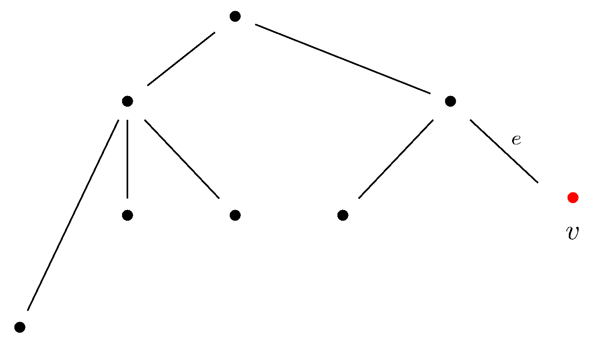
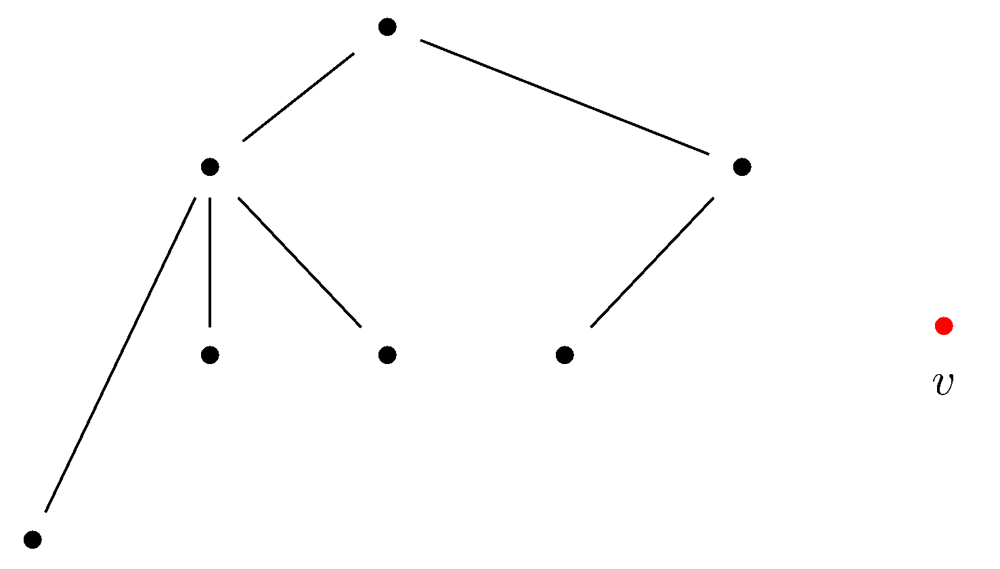
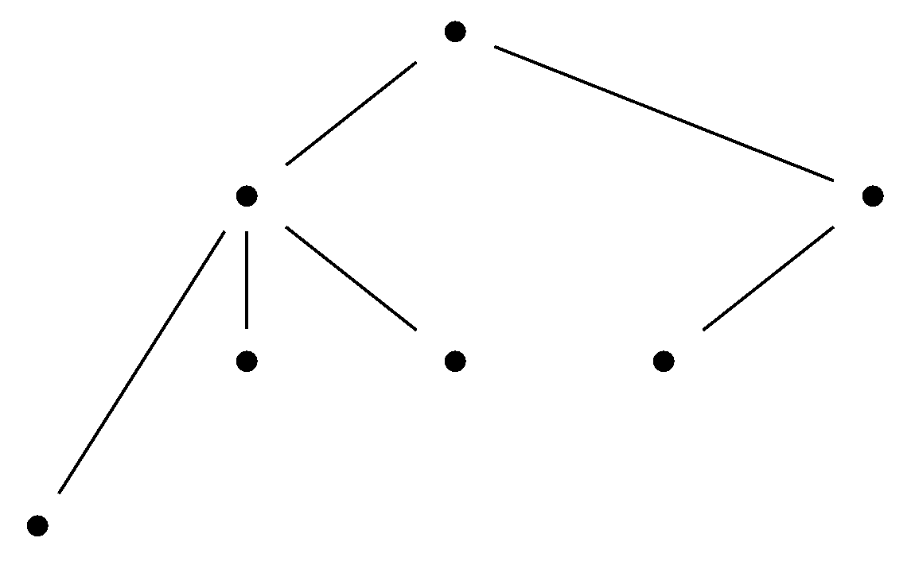

May 20th
Today I learned some examples of the chromatic polynomial. We take these one at a time. Here are two examples where direct combinatorics is good enough.
Proposition. The chromatic polynomial for the null graph on $k$ vertices $G$ is $\chi_G(n)=n^k.$
Well, given $n$ colors, each vertex has $n$ color choices, so multiplying these together gives $\chi_G(n)=n^k.$ This finishes. $\blacksquare$
Proposition. The chromatic polynomial for the complete graph on $k$ vertices $G=K_k$ is $\chi_G(n)=k!\binom nk.$
Because all vertices are adjacent in the complete graph, all colors must be distinct. Fixing some $n,$ we have to begin by choosing $k$ colors out of the $n,$ of which there are $\binom nk$ ways to do.
After choosing our $k$ colors, the coloring is just a bijection from the $k$ colors to the vertices of $K_k,$ and any bijection will do because all vertices will get their own color. The number of bijections between two $k$-element sets is $k!.$ (This is by induction, or we can say that $1$ has $k$ options, $2$ has $k-1,$ options, and so on.) Multiplying, we get $\binom nk\cdot k!,$ which is what we wanted. $\blacksquare$
We note that we can optimize the above argument by numbering off the vertices of $K_k$ and then saying the first vertex has $n$ options for color, the second has $n-1$ because it can't share the first vertex's color, the third has $n-2$ because it can't be the previous two, and so on. This will multiply to\[\prod_{\ell=0}^{k-1}(n-\ell)=k!\binom nk,\]which is what we wanted. I chose the above argument because it feels a little more solid to me, and it is more in the spirit of the poset-styled proof that the chromatic polynomial is polynomial.
For the next few graphs, we use the deletion-contraction principle. We recall this briefly.
Proposition. Given a graph $G$ and an edge $e\in E(G),$ the chromatic polynomial $\chi_\bullet$ satisfies the functional equation \[\chi_G=\chi_{G\setminus\{e\}}-\chi_{G/e}.\]
We showed this two days ago. The idea is to write this as $\chi_{G\setminus\{e\}}=\chi_G+\chi_{G/e}.$ Now, given $n,$ any $n$-coloring of $\chi_{G\setminus\{e\}}$ either give the endpoints of $e$ different colors, in which case it is a coloring of $G$ in disguise, or it gives the endpoints of $e$ the same colors, in which case it is a coloring of $G/e.$ This casework finishes. $\blacksquare$
We start simple and build.
Proposition. The chromatic polynomial for any tree on $k$ vertices $G=P_k$ is $\chi_G=n(n-1)^{k-1}.$
Here is an example of a tree.

For the purposes of the proof, we will need to know that there is a vertex of degree $1$ and that removing this vertex (and edge) keeps the graph of a tree. Well, there is a degree-$1$ vertex (a "leaf'') because if all vertices have degree at least $2,$ then we have a cycle.
As for connectedness, any path between two vertices not equal to the leaf can be preserved after deleting the leaf because the only way into the leaf is the same way out of the leaf, so a path going through the leaf but not ending at the leaf can have the visit to the leaf deleted entirely. (We are not going to be very rigorous with this.)
Anyways, we prove the statement by induction on $k.$ When $k=1,$ there is only one vertex with no edges, so this is the null graph on $1$ vertex, so $\chi_G(n)=n^1$ from earlier. For the inductive step, we suppose that the statement is true for all trees with $k$ vertices, and we will show it for all trees of $k+1$ vertices. Here is at tree with $k+1$ vertices, named $G.$

Pick a leaf, say the bottom-right leaf, and label it $v$ with its one outgoing edge as $e.$
Now, our functional equation asserts that\[\chi_G=\chi_{G\setminus\{e\}}-\chi_{G/e},\]so we have to think about $\chi_{G\setminus\{e\}}$ and $\chi_{G/e}.$ Well, we have that $G\setminus\{e\}$ looks like the old graph $G$ with the red vertex $v$ disconnected.

The number of ways to color this graph with $n$ colors is the number of ways to first give $v$ some random color and then color the remaining tree with $k+1-1=k$ vertices. (That what remains is s a tree is established above.) By the inductive step, this is $\chi_{G\setminus\{e\}}=n\cdot n(n-1)^{k-1}=n^2(n-1)^{k-1}.$
As for $G/e,$ this is the graph identifying $v$ with its one neighbor, but because $v$ has no other neighbors, this process is exactly the same as deleting $v$ and the edge $e$: the normal process for $G/e$ is to identify the vertices on each side and then adjust each other edge accordingly, but there are no other edges to adjust here! So we get something like the original tree.

The point is that we can say $\chi_{G/e}(n)=n(n-1)^{k-1}.$
Putting this all together, we see that\[\chi_G(n)=\chi_{G\setminus\{e\}}(n)-\chi_{G/e}(n)=n^2(n-1)^{k-1}-n(n-1)^{k-1}=n(n-1)^{(k+1)-1},\]so we are done here. $\blacksquare$
As an aside, we remark that we can actually choose any edge of the tree in the above proof we want. The point is that $G/e$ will be a tree with one fewer vertex, and $G\setminus\{e\}$ will be two trees which in total have the same number of vertices. So our inductive step looks like\[\chi_G(n)=\chi_{G\setminus\{e\}}(n)-\chi_{G/e}(n)=n(n-1)^{a-1}\cdot n(n-1)^{b-1}-n(n-1)^{(k+1-1)-1},\]where $a+b=k+1$ corresponds to the number of vertices on each tree. (Note that the number of ways to color a graph with multiple components is the product of the way to color each individual component because components don't communicate.) The above rearranges into\[\chi_G(n)=n^2(n-1)^{k-1}-n(n-1)^{k-1}=n(n-1)^{(k+1)-1},\]which is what we wanted. However, the above proof requires a strong induction, and it also requires some more sophisticated thought about graph components, both of which are easier if we just use a leaf.
We also remark that we can give a more combinatorial proof of the above result: start somewhere random in the tree, give it one of the $n$ colors, and then progressively look at its neighbors using, say, breadth-first search. Each new vertex we look at will be a neighbor to exactly one of the previously visited vertices and so will have $n-1$ options for color. This gives\[\chi_G(n)=n(n-1)^{k-1},\]as desired. I didn't give this proof because rigorizing the breadth-first search seems quite painful; however, I mention this here anyways because it is quite intuitive.
Anyways, here's a quick application.
Proposition. The cycle graph on $k \gt 1$ vertices $G=C_k$ has chromatic polynomial $\chi_G(n)=(n-1)^k+(-1)^k(n-1).$
Like last time, we use induction on the number of vertices. As our base case, we note that $k=2$ vertices gives $\chi_G(n)=(n-1)^2+(n-1)=n^2-n=n(n-1).$ This is correct because $C_2$ is pretty much two vertices connected by (two) edge(s), so it is $K_2.$
We now proceed with the induction. Suppose the statement is true for $C_k,$ and we will show $G=C_{k+1}.$ We use the functional equation by selecting any edge $e.$ We have that\[\chi_G=\chi_{G\setminus\{e\}}-\chi_{G/e}.\]Being a bit non-rigorous, we note that subtracting an edge of the cycle makes it into a tree with $k+1$ vertices, so $\chi_{G\setminus\{e\}}=n(n-1)^{k+1-1}$ from the previous proposition.
More rigorously, we can label the vertices $\{v_1,\ldots,v_{k+1}\}$ with a connection between $v_\ell$ and $v_{\ell+1\pmod{k+1}}.$ Deleting, say, the edge between $v_1$ and $v_{k+1}$ means that the edges only connect in a directly ascending and descending way, so the only path between $v_a$ and $v_b$ is straight up (if $a \lt b$) or straight down (if $a \gt b$).
As for $G/e,$ this is the cycle on $k+1-1$ vertices. Indeed, reusing the labeling in the previous paragraph, we can equivalently choose to mod out by the edge between $v_k$ and $v_{k+1}$ to make a graph on the vertices $\{v_1,\ldots,v_k\}$ with a connection between $v_\ell$ and $v_{\ell+1}$ for $\ell \lt k$ and an edge between $v_k$ and $v_1.$ This is exactly $C_k.$
Combining all this, we see that\[\chi_G(n)=n(n-1)^k-\left((n-1)^k+(-1)^k(n-1)\right).\]This rearranges into $\chi_G(n)=(n-1)^{k+1}+(-1)^{k+1}(n-1),$ which is exactly what we wanted. $\blacksquare$
The above is somewhat remarkable because I don't actually know a quick way to prove this result directly, combinatorially. One could remove the phrasing with the use of the tree chromatic polynomial or the functional equation, but I don't know of a non-inductive/non-recursive approach. I might remember something using generating functions, but it isn't terribly direct either.
As some final commentary, we remark that the chromatic polynomial is not unique per graph. The most obvious counterexample we've seen is that all trees on the same number of vertices have the same chromatic polynomial, and there are generally a lot of trees on a given number of vertices.